Ben Mitchell
Builder. Coder. Maker.
An archive of my random projects and interests — from stage sets to software, D&D builds to Discord bots.
View Resume
Builder. Coder. Maker.
An archive of my random projects and interests — from stage sets to software, D&D builds to Discord bots.
View Resume
Scribe bot produces a bot which will transcribe the conversation from a Discord voice channel to a text channel. It utilizes Google Speech-to-Text webservices. The initial use was to transcribe D&D games, but there is great potential as an accessibility tool — for deaf players to read voice comms, or for blind players to have text chat read to them.
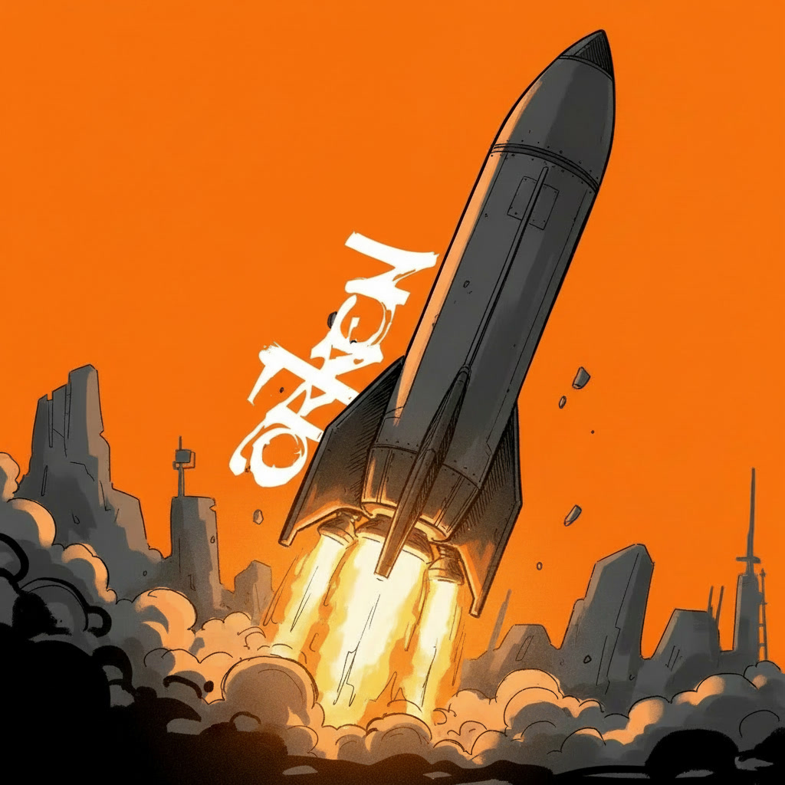
VBS — Vacation Bible School — is a week-long summer camp run by the church. Ours runs at night because most of our volunteers have day jobs. In 2019 the theme was "To Mars and Beyond," and I built Mission Control: a physical launch console that actually launches a rocket.
The sequence works like this: first, a 9-button version of Simon — the pattern grows one flash at a time until you've successfully mirrored a sequence of six. Then you're prompted to hit a series of buttons and flip a guarded blast-control toggle (the kind with a safety cover you have to lift first). Finally a large red button starts blinking. Hit it, and a countdown begins — and when it reaches zero, a smoke machine fires under a big prop rocket across the room.
The control panel runs on a Raspberry Pi 3 with GPIO expander chips to get enough pins for all the buttons and lights. The Pi drives sprite-based 8-bit animations on a monitor mounted just above the panel — an animated character walks you through each step and mirrors the physical controls on screen so you always know what to do next.
The build took a month. It was worth every hour.
Full Demo
Receiver Board Build & Test

Play enough Overwatch and you need something to change things up. This Slack bot randomly assigns roles to a team of 2–6 players, using DJ Khaled as its icon alongside one of his inspirational quotes. The role queue system made it obsolete but it's a solid chatbot example.


The N Queens problem: place N chess queens on an N×N board so that no two attack each other. The goal is not to find one solution, but to find all solutions for a given N. One of those math problems that takes over my mind from time to time.
Place N queens on an N×N chessboard so that no two queens attack each other. Queens attack horizontally, vertically, and diagonally.
Click any square to place or remove a queen.

Before digital printing, newspapers reproduced photographs using a trick called halftone — breaking a continuous-tone image into a grid of dots that vary in size. Larger dots read as dark areas, smaller dots as light. Your eye blends them into a full image from a distance, even though up close it's just ink circles on paper.
This tool applies the same principle to laser cutting — converting a portrait into an SVG of sized circles that a laser etches into tile, wood, or other flat materials. The result is a permanent halftone portrait you can hold.
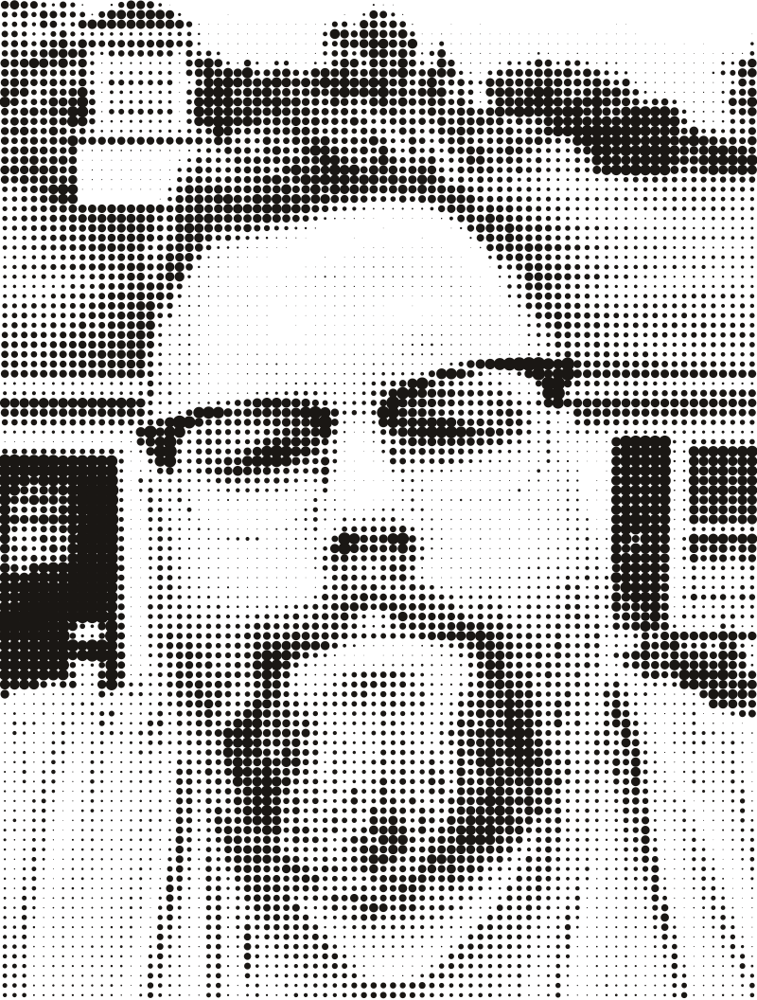


Making SVG stencils in Illustrator is easy, but adding tabs to hold islands in position is not. This tool breaks up overly long lines and anchors islands. Still a work in progress.


GridlockDM is a self-hosted, real-time multiplayer battle map for D&D 5e. The DM runs the server and players join via a human-readable invite code — no accounts required. Built with Spring Boot and WebSockets, it keeps every connected client (DM, players, and a TV/projector view) in sync in real time.

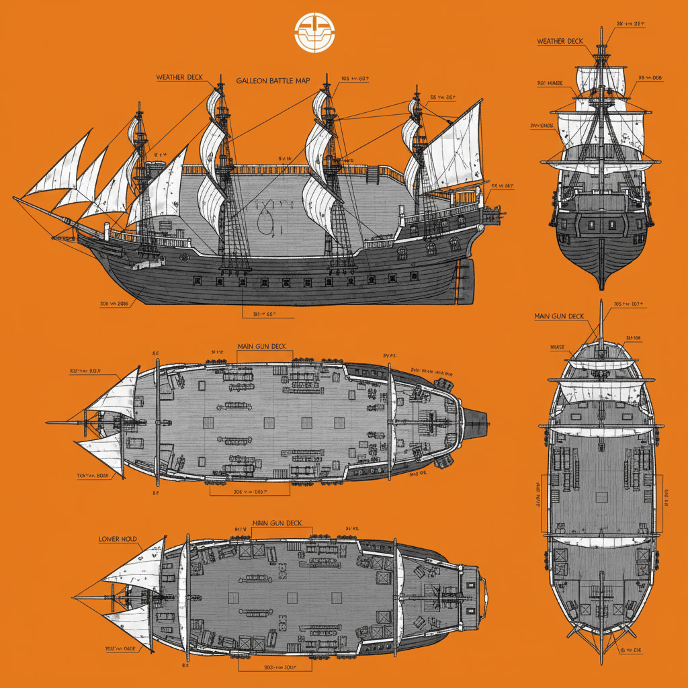
Our D&D group was running "Storm King's Thunder" and the DM needed something for the airship. Buying a model wasn't really an option — nothing on the market was the right scale for a party of five or six, and a paper printout felt like giving up.
I pulled up a few existing battle maps for reference, then designed my own cut files from scratch in Illustrator. The ship is laser cut from Glowforge Proofgrade maple plywood — it comes pre-masked with a light varnish, so the finish is clean right off the machine with no extra work. It's a bit oversized for smaller tables, but that's intentional: with a large party, you need the real estate.
Cut files are on Thingiverse if you want to build your own.


Chess is a politically charged Cold War musical pitting grandmasters from America and the USSR against each other — loosely mirroring the real-life rivalry of Bobby Fischer and Boris Spassky. Bravo put it on for their 2019 show, and I built the stage and the frames to fly the flags in the background. Simple construction by design — keeping it clean lets the flags and the actors carry the scene.


I signed up for this build expecting to be the third banana in the bunch. Then bananas one and two had to bow out, and suddenly I was running the show. Fortunately the director had a strong vision and my father-in-law was willing to back me up.
The set transforms a library into an enchanted forest — second-story balcony, a short bridge, and a spiral staircase that had to look elegant, survive actors dancing on it, and not destroy the budget. The staircase is a series of triangles and risers wrapped in flexible plywood to fake the curve, then finished out with scraps to finesse the shape. From the back it's pure construction logic. From the third row it looks like it grew there.


A local high school was putting on The Little Mermaid. One of the dads procured a real launch rowboat for the "Kiss the Girl" scene — thematically great, but practically a problem: real rowboats are twenty feet long. When the eels spin the boat at the end of the number, it was going to take out every child on the stage. Sub-optimal.
A trip to Harbor Freight for cheap casters and Home Depot for a sheet of vinyl siding — the kind that looks like an '80s basement but impossibly white and incredibly flexible — and a couple hours of kitbashing later, the boat was ready to roll. The real highlight was watching Kristen pilot the finished prop around the shop at full speed.


I was watching toooo much Black Magic Craft. His foam dungeon tiles gave me an idea — but my skills lean more toward CNC than hand-drawn artistry, so I reached for the laser cutter and some cheap underlayment from Home Depot instead. I did steal his paint technique though, and it works just as well on wood. All paint is Craft Smart or the equivalent bargain line from your local craft store.


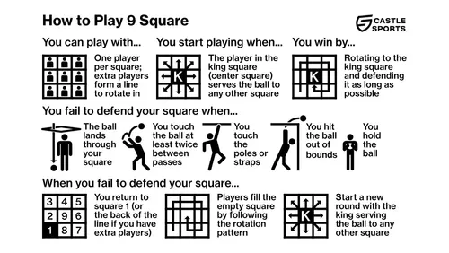
Nine players each stand in one square of a 3×3 grid of elevated PVC frames. A ball is batted upward through the grid — if it lands in your square without you getting it up, you're out and rotate to the back of the line. The center square is the hot seat.
We spotted a commercial metal version at summer retreat and decided to build our own for about $150 in PVC. The key hardware is FORMUFIT furniture-grade connectors — designed for building structures rather than running water, so they offer configurations a plumber would never need: multi-port hubs, adjustable-angle joints, flat end caps, and rail fittings that let you build frames, racks, and grids out of standard PVC. We had the brilliant idea of letting the kids cut all the pipe themselves. They did a great job.
It lives permanently in the youth group room and gets requested constantly — including by adults, who we've learned to politely decline after several incidents involving ceiling lights and prescription eyewear.


The school had originally planned to rent muskets from a prop house. Then they arrived — flat cardboard cutouts. The actors were not thrilled. I was asked to fix it.
Twenty muskets, under $4.00 each, sourced entirely from Home Depot. The stock shape came from a Brown Bess silhouette — laser cut into a template, then traced onto cheap 2×6 framing lumber. The 2D shape came off the band saw; the 3D taper then got rough cut on the band saw and sanded and planed into its final form. A channel routed into the stock accepts a length of 3/4" electrical conduit for the barrel. Pocket screws and glue bring it all together.
I'm the builder on this crew, not the painter — the rest of the team made them look period-accurate and genuinely beautiful. My only contribution to the finish was not messing it up.
The unglamorous postscript: after all of that, I had to carry twenty replica muskets across a school parking lot. Turns out realistic-looking weapons and school property are a stressful combination regardless of context.


Built for a science demo at MPC VBS, this vortex cannon demonstrates one of fluid dynamics' most elegant phenomena: the toroidal vortex ring. The cannon body is a standard trash can with an opening cut in the bottom and a trash bag stretched tightly across the top as a membrane. When the membrane is struck, a pulse of air is forced through the aperture.
At the exit hole, air near the edge is slowed by friction with the rim while air at the centre travels faster — a velocity gradient known as shear flow. Kelvin–Helmholtz instability causes this shear layer to roll up into a closed, self-reinforcing loop: the vortex ring. By the Biot–Savart law, each segment of the rotating core induces a velocity field on every other segment, and the net result is a donut-shaped structure that propels itself forward at a steady speed. Circulation (Γ) is conserved, so the ring resists breakup over long distances — enough to topple a tower of cups several metres away. Injecting fog from a smoke machine traces the ring mid-flight by condensing inside the low-pressure core, making the otherwise invisible fluid structure pop into view.

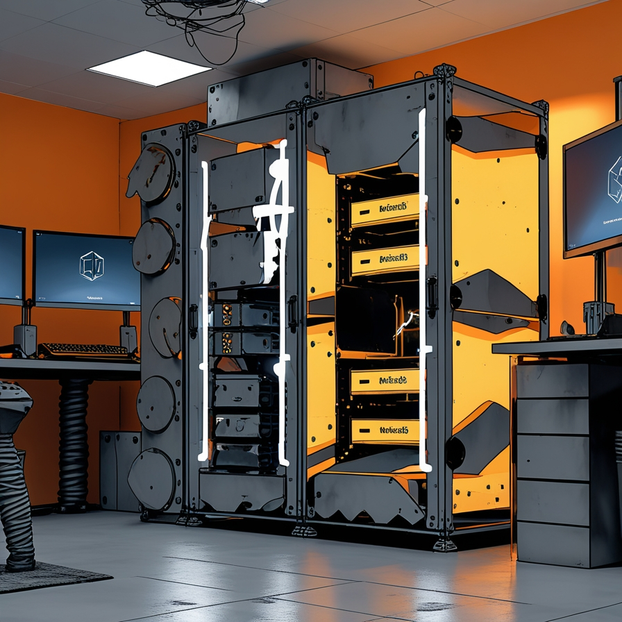
Every good homelab starts with "I just need somewhere to put this old server" and ends with a rack, a UPS, a NAS, and a KVM console you tell yourself was a practical purchase.
The backbone is a StarTech 25U open-frame rack on casters — adjustable depth means nothing is bolted in forever, which matters when the plan changes every six months. Power comes from a CyberPower 1500VA PFC Sinewave UPS for the critical gear, backed up by a CyberPower 12-outlet rackmount PDU for everything else.
The compute node is two Dell PowerEdge R710 — dual X5670 six-core CPUs, 144 GB RAM, and six 2 TB drives. It is loud enough that the closet door stays closed. Storage lives on a QNAP TS-832PXU-RP NAS with dual 10 GbE and redundant PSU, because if you're going to do it you may as well do it right. The whole rack is managed through an MT-Viki 8-port KVM console with a built-in 17" LCD and touchpad — one drawer to rule them all.
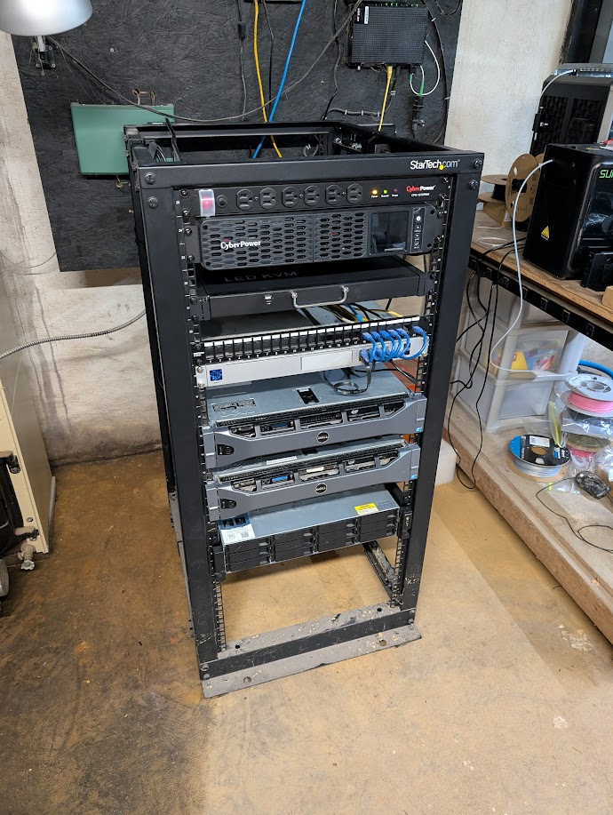
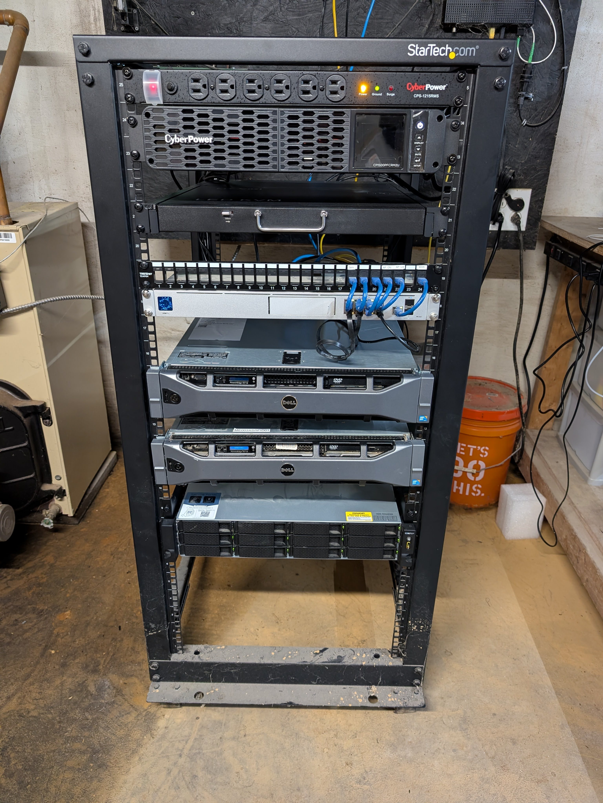
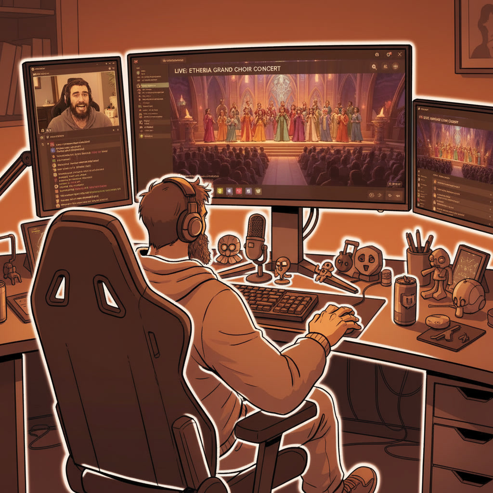
I never wanted to be a Twitch streamer, but the world locked down. Since people couldn't go to church, church had to come to them.
Version 1 was a personal laptop and a bad webcam on a tripod a few feet in front of the pulpit. From there it grew — iteration by iteration — into something real: a Logitech Brio for the main shot, Wyze cameras running custom firmware for additional angles, all fed through Streamlabs OBS and edited in DaVinci Resolve. Audio runs through the worship space sound system — a Mackie ProFX22v3 — so the mix the congregation hears is the mix that goes out.
The setup now lives in the sound booth, fully integrated. One of the church's youth runs it every week. I am happy to be the backup.


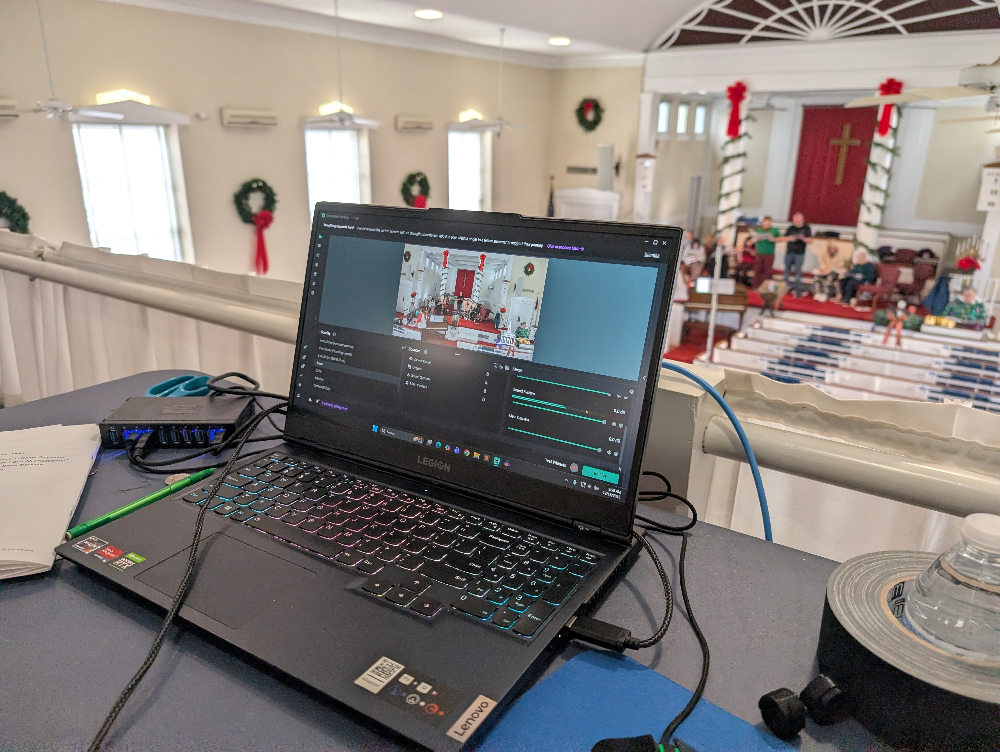
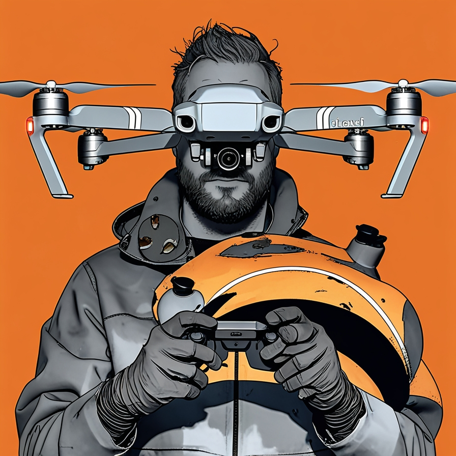
I picked up a refurbished Parrot AR.Drone 2.0 on the cheap — one of the first mass-market camera drones, released in 2012 and controlled entirely over Wi-Fi from a phone. Ahead of its time then, a paperweight now. The FAA's Remote ID rule (fully enforced since September 2023) requires drones over 250g to broadcast live ID and location data. The AR.Drone 2.0 has no Remote ID hardware, no upgrade path, and Parrot never made it compliant — meaning it can only legally fly inside an FAA-Recognized Identification Area (FRIA). So I definetly never do that.... ever. I'd love to get back into it someday and try some FPV flight — just with hardware from this decade.

Around 1998, my cousin and I decided to build lightsabers. Not buy them — build them. The hilt is assembled from hardware store plumbing: slip-joint sink drain pipe for the body, sump pump hose for grip texture, faucet knobs for detail. The electronics came from Radio Shack: battery holders, a momentary contact switch, some LEDs, and — in a moment of ambition that seemed completely reasonable at the time — a jeep headlight.
The first time we powered it on, it was extraordinarily bright. It was also extremely hot. And it drained the batteries in seconds. These three facts are directly related.
It was perfect.


I have a deep, abiding love for chess and a remarkable talent for making my opponents feel like geniuses. My openings are solid. My middlegame is creative. My endgame is a crime scene.
Still very much a student of the game, and happy to be one. If you play — casually, seriously, or anywhere in between — pull up a board. Good conversation tends to follow.
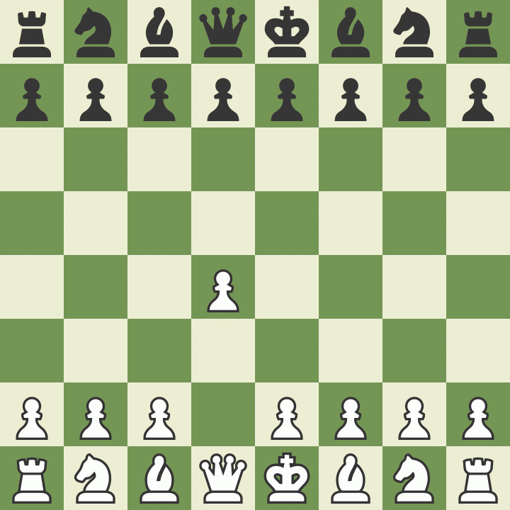